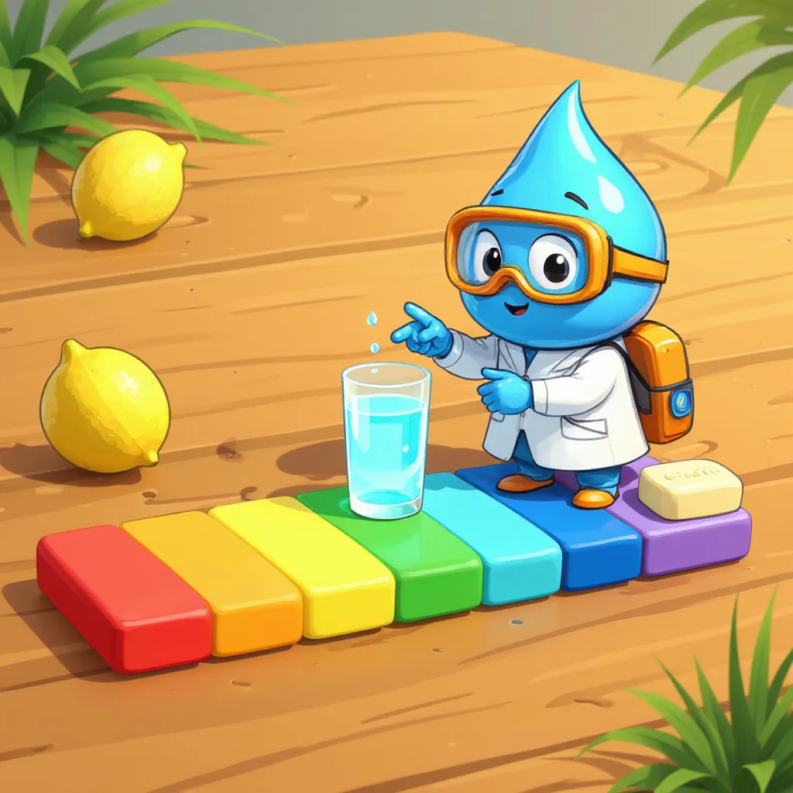
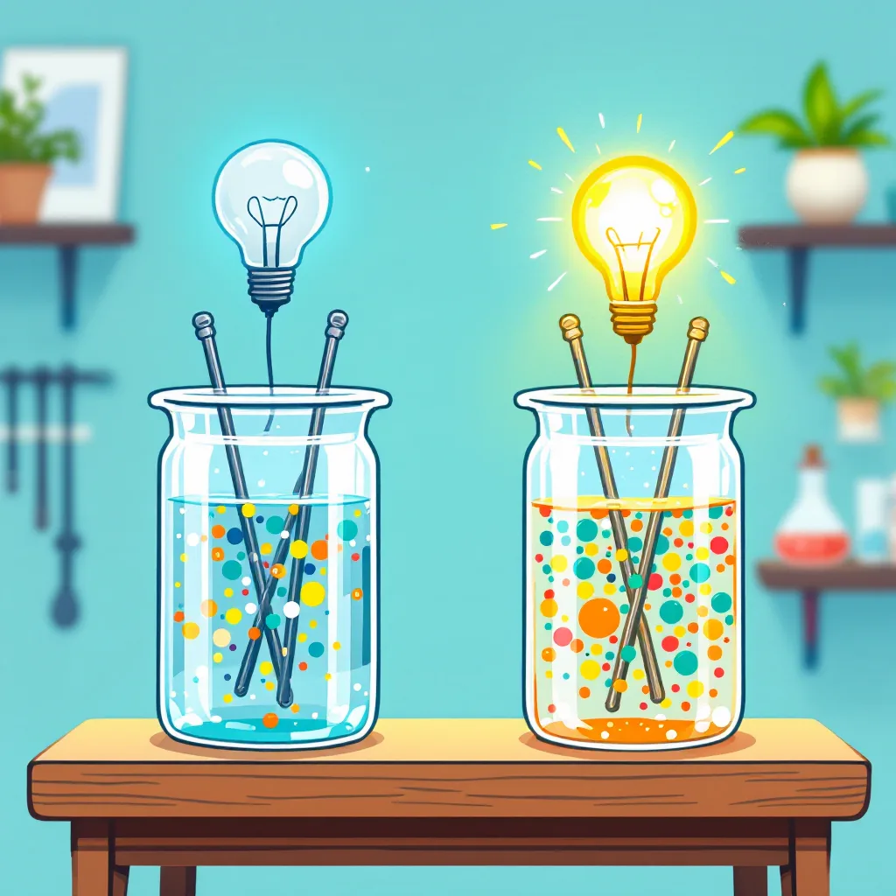

Parámetro 1 de 6
pH y conductividad
¿El agua es ácida o básica? ¿Cuántas sales lleva disueltas?
El pH
Para comenzar, el pH indica si el agua es ácida, neutra o básica, usando una escala que va de 0 a 14. Por ejemplo, el jugo de limón es ácido y tiene un pH cercano a 2, mientras que el jabón es básico y pasa de 9. En el centro, cerca de 7, está el agua pura, que es neutra. Además, en Colombia el agua para beber debe tener un pH entre 6,5 y 9,0, según la Resolución 2115 de 2007.

La escala del pH
Explora ejemplos de la vida diaria.
De hecho, cada punto de la escala multiplica por diez la cantidad de iones hidrógeno libres, que son las partículas que hacen ácida al agua. Por eso, un agua con pH 5 tiene diez veces más de esas partículas que una con pH 6, y cien veces más que una con pH 7.
pH, acidez y alcalinidad: tres preguntas distintas
Además, pH, acidez y alcalinidad suelen confundirse, pero cada uno responde una pregunta distinta. Por ejemplo, en un partido de fútbol, el pH sería qué tan fuerte ataca el equipo contrario en este momento; la acidez, cuántos jugadores atacantes tiene en total; y la alcalinidad, qué tan grande es la defensa propia. Así, dos aguas pueden tener el mismo pH y, sin embargo, una puede resistir mucho más ácido que la otra.
🧪 pH
- Pregunta que responde
- ¿Qué tan ácida o básica está el agua en este momento?
- Cómo se mide
- Lectura directa con pHmetro.
- Unidad
- Ninguna: escala de 0 a 14.
- Ejemplo
- Agua de la llave: pH 7,4.
- En el cómic
- La fuerza de los villanos.
⚔️ Acidez
- Pregunta que responde
- ¿Cuánta sustancia ácida hay en total?
- Cómo se mide
- Titulación con NaOH 0,02 N y fenolftaleína.
- Unidad
- mg CaCO₃/L
- Ejemplo
- 50 mg CaCO₃/L.
- En el cómic
- Contar a todos los villanos.
🛡️ Alcalinidad
- Pregunta que responde
- ¿Cuánto ácido puede resistir el agua sin que su pH se desplome?
- Cómo se mide
- Titulación con HCl 0,02 N, fenolftaleína y anaranjado de metilo.
- Unidad
- mg CaCO₃/L
- Ejemplo
- 168 mg CaCO₃/L.
- En el cómic
- El tamaño del escudo.
Dos aguas tienen pH 7,0. El agua A tiene alcalinidad de 20 mg CaCO₃/L y el agua B, de 200 mg CaCO₃/L. A las dos les llega la misma cantidad de ácido.
- El escudo de B es 200 ÷ 20 = 10 veces más grande que el de A.
- El agua A gasta rápido su escudo y su pH puede caer varios puntos, por ejemplo hasta cerca de 5.
- El agua B neutraliza el ácido y su pH casi no cambia.
Por eso, el pH solo no basta: también hay que medir la alcalinidad y la acidez.
¿Cómo se calcula el pH?
Por otra parte, el pH se calcula a partir de la cantidad de iones hidrógeno (H⁺), que son las partículas que hacen ácida al agua. Esa cantidad se escribe en moles por litro, una forma de contar partículas, y es un número decimal muy pequeño: en el agua neutra es 0,0000001. Entonces, el pH es la posición donde aparece el 1 después de la coma; en ese ejemplo es la séptima, así que el pH es 7.
pH 7 → [H⁺] = mol/L
Cuando el número no es exacto, se usa la fórmula pH = −log[H⁺], donde log es una tecla de la calculadora científica.
- [H⁺] = 0,001 mol/L es lo mismo que 10⁻³.
- pH = −log(10⁻³) = −(−3) = 3.
- Si [H⁺] = 0,00004 mol/L: pH = −log(0,00004) ≈ 4,4.
¿Cómo se mide?
Por otra parte, el pH se mide con un pHmetro, un aparato con una punta de vidrio llamada electrodo que se sumerge en la muestra. Antes de usarlo, se calibra con líquidos de pH conocido, por ejemplo 4 y 7, igual que se ajusta una balanza antes de pesar. Luego, se espera a que el número de la pantalla deje de moverse y se anota con un decimal, como 7,4.
Además, la conductividad indica qué tan fácil pasa la corriente eléctrica por el agua. Esto ocurre porque las sales disueltas se separan en partículas con carga, llamadas iones, que transportan la electricidad. Por eso, a más sales disueltas, mayor conductividad. Por ejemplo, en una práctica, el agua de la llave marcó 210 microsiemens por centímetro y el agua de una quebrada marcó 85; es decir, el agua de la llave llevaba más sales.
Laboratorio virtual: medir el pH
Sigue los pasos en orden con el botón azul; cada dato queda en el cuaderno de laboratorio.
Más sales, más corriente

Por ejemplo, µS/cm se lee «microsiemens por centímetro» y es la unidad de la conductividad. Así, un número más alto significa que el agua lleva más sales disueltas.
En cambio, el agua destilada casi no tiene sales, así que su conductividad es muy baja, menor a 5 µS/cm. Por eso, se usa para enjuagar los electrodos entre una muestra y otra.
Laboratorio virtual: medir la conductividad
Mini-reto
Todas las respuestas se encuentran en esta página.
La Resolución 2115 exige un pH entre 6,5 y 9,0 para el agua de beber. Una muestra marca 5,5. ¿Cumple?
Según el calculador de esta página, ¿cuántas veces más iones H⁺ tiene un agua de pH 5 que una de pH 7?
Dos aguas tienen pH 7,0; la A tiene alcalinidad de 20 mg CaCO₃/L y la B, de 200. Les llega el mismo ácido. ¿Cuál cambia menos su pH?
En el laboratorio virtual, M1 marcó 210 µS/cm y M2, 85 µS/cm. ¿Cuál lleva más sales disueltas?